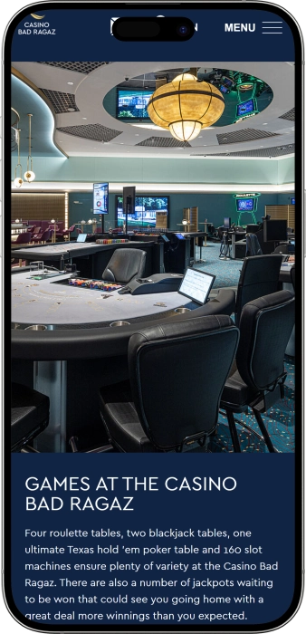

Exklusives Willkommensangebot von
Exklusives Willkommensangebot von
Casino Bad Ragaz – Spiele, Atmosphäre, Events und Erholung
Top-Casino
Bonusdetails
Casino
Boni
Rate
Freispiele
Mehr Infos
Erhalten
Vorteile
-
Über 160 Slots: grosse Spielauswahl.
-
Roulette und Blackjack als Live-Game.
-
Ultimate Texas Hold’em für Pokerfans.
-
Jackpots mit progressiven Gewinnmechaniken.
-
Stilvolles Ambiente mit Resort-Komfort.
-
Gratis Eintritt und klare Besuchsregeln.
-
Bar mit riesiger Gin-Auswahl.
- Das Casino Bad Ragaz überzeugt durch die gelungene Mischung aus Spiel, Genuss und hochwertiger Abendstimmung. Man kann entspannt an den Automaten starten und später an die Live-Tische wechseln. Das Gesamtpaket wirkt hochwertig, bleibt aber angenehm zugänglich – ideal für einen spontanen Ausflug oder einen geplanten Abend.
Casino Bad Ragaz App


Über Casino Bad Ragaz
Hervorzuheben ist die Kombination aus grossen Jackpot-Chancen und promotionsstarken Spielbereichen an den Automaten. Dazu kommen Live-Games und Bar-Atmosphäre, wodurch sich Gewinnmomente wie ein kompletter Event-Abend anfühlen.
- Jackpot bis 150 000 CHF.
- Mystery-Jackpots: Auszahlungen bis 15 000 CHF.
- Slots: regelmässige Promo-Verlosungen.
Das Casino Bad Ragaz ist ein stilvoller Ort für einen Abend, an dem Spiel und Resort-Feeling zusammenfinden. Die Bereiche sind so gestaltet, dass man sich sowohl bei den Automaten als auch an den Tischen wohlfühlt. Der Service wirkt aufmerksam und unaufdringlich, was die Stimmung angenehm entspannt hält.
Am Abend rücken die klassischen Live-Tischspiele mit Croupiers in den Fokus. Slot-Fans profitieren von Abwechslung bei Themen, Mechaniken und Einsatzhöhen. Die Bar ergänzt das Erlebnis und macht aus dem Besuch einen runden Ausgang. Regelmässige Highlights sorgen für zusätzliche Dynamik neben dem regulären Spielbetrieb. Der Zutritt ist unkompliziert, die Regeln sind klar kommuniziert. Das Ambiente passt für einen kurzen Abstecher ebenso wie für einen langen, späten Abend. Insgesamt entsteht ein modernes Unterhaltungserlebnis in gepflegter Umgebung.
Casino Bad Ragaz: Stil, Spiel und Resort-Flair
Das Casino Bad Ragaz wirkt wie eine elegante Bühne für einen Abend, bei dem Licht, Design und Stimmung bewusst zusammenspielen. Die Atmosphäre ist nicht laut, sondern gepflegt und festlich – passend für spontane Besuche ebenso wie für geplante Ausgänge. Räumlich fühlt man meist eine klare Trennung zwischen dem lebendigen Automatenbereich und den ruhigeren Live-Tischen. Dieser Mix macht es leicht, zwischen entspanntem Spiel und intensiveren Runden mit Croupier zu wechseln. So entsteht ein Erlebnis, das über reines Spielen hinausgeht.
Die Öffnungszeiten sind darauf ausgerichtet, dass man sowohl tagsüber als auch bis spät in die Nacht hinein vorbeikommen kann. Die Automaten stehen bereits früher zur Verfügung, während die Live-Tische typischerweise am Abend stärker in den Vordergrund rücken. Das ist sinnvoll, weil viele Gäste gerade dann die klassische Casino-Stimmung suchen. Dadurch ergeben sich zwei Besuchsszenarien: ein kurzer Tagesbesuch oder ein langer Abend mit Live-Feeling. Für die Abendplanung ist der Start der Live-Games ein praktischer Orientierungspunkt.
Die Bar ist ein zentraler Teil des Gesamterlebnisses, weil viele den Besuch als Kombination aus Spiel, Drinks und Musik verstehen. Die Golden Wave Bar eignet sich, um den Abend mit einem Cocktail zu starten, zwischendurch bewusst zu pausieren oder das Spiel entspannt ausklingen zu lassen. Die Getränkeauswahl unterstützt ein modernes, „clubartiges“ Gefühl, ohne dass es aufgesetzt wirkt. Damit verbindet die Bar spielerische Spannung mit Erholung. Das macht den Besuch runder und hochwertiger.
Zusätzlich profitiert das Casino von der Resort-Umgebung, wodurch aus einem Abend schnell ein Kurztrip werden kann. Wer über Nacht bleiben möchte, kombiniert das Spielen bequem mit Hotelkomfort und weiteren Angeboten. Gerade für Paare oder Gruppen ist das praktisch, weil jeder seinen eigenen Rhythmus findet. Man muss den Ort nicht wechseln, um den Abend zu verlängern oder abwechslungsreicher zu gestalten. Das Resort-Flair verstärkt das Premium-Gefühl des Ausgehens.
Events und Entertainment liefern zusätzliche Gründe, regelmässig wiederzukommen. Live-Musik, Themenabende oder Verlosungen geben dem Kalender Struktur und erhöhen die „Event-Dichte“ einzelner Abende. An solchen Tagen wirkt das Haus spürbar lebendiger und der Besuch wie ein kleines Highlight. Entertainment rahmt das Spiel als Teil eines Gesamtabends ein. Das spricht besonders Gäste an, die Stil und Erlebnis gleichermassen suchen.
Bei Bonusmechaniken und Loyalität arbeiten terrestrische Casinos häufig mit Club-Logik und spielbezogenen Promotions. Der Mehrwert zeigt sich oft in Punkten, Einladungen, kleinen Extras und personalisierten Angeboten für Stammgäste. Darüber hinaus spürt man Loyalität auch ohne Formalitäten – über Servicequalität, Komfort und klare Regeln. Insgesamt positioniert sich das Casino Bad Ragaz als Ort, an den man wegen Atmosphäre und Vielfalt der Abendoptionen gern zurückkehrt. Genau darin liegt die besondere Stärke als Entertainment-Location.
Personal, Zahlung und Gewinnauszahlung: so läuft es ab
Das Personal im Casino Bad Ragaz wird häufig als serviceorientiert wahrgenommen: aufmerksam, höflich und dennoch angenehm zurückhaltend. Für Einsteiger ist wichtig, dass Regeln, Einsätze und Abläufe verständlich erklärt werden können. Erfahrene Gäste schätzen schnelle Abläufe an den Tischen und eine saubere Kassenabwicklung. Gerade in den Abendstunden, wenn es lebendiger wird, wirkt ein ruhiger, professioneller Service besonders wertvoll. Dadurch bleibt das Spielgefühl entspannt und kontrolliert.
Sprachlich sind in terrestrischen Casinos typischerweise Deutsch und Englisch gut abgedeckt, oft auch Französisch und Italienisch. In touristisch geprägten Häusern kann das Angebot je nach Saison und Gästemix variieren. Wer eine bestimmte Sprache wünscht, kann dies direkt an der Kasse oder beim Empfang ansprechen. In vielen Fällen findet sich schnell eine passende Ansprechperson. Diese Flexibilität erhöht die Komfortzone, besonders für internationale Gäste.
Als Währung dominiert der Schweizer Franken (CHF), was die Abwicklung an Kasse und Tischen vereinfacht. In der näheren Umgebung sind häufig Geldautomaten verfügbar, um Bargeld zu beziehen. Für den Währungswechsel ist es in der Regel sinnvoll, offizielle Stellen wie Banken oder Wechselstuben zu nutzen, um Klarheit über Konditionen zu haben. Viele Gäste planen ihr Spielbudget bewusst im Voraus, um die Ausgaben besser zu steuern. Das hilft, Impulsentscheidungen zu vermeiden.
Bei den Zahlungsmethoden gilt: Serviceausgaben lassen sich oft mit Bargeld oder Karte begleichen, während Spieltransaktionen im terrestrischen Casino meist über die Kasse laufen – Chips kaufen, wechseln und auszahlen. Gängige Karten wie Visa und Mastercard sind für Nebenkosten häufig verbreitet, die Details können jedoch je nach Bereich variieren. Praktisch ist eine Kombination aus Karte und Bargeld, um flexibel zu bleiben. Wer Budgetkontrolle priorisiert, setzt sich am besten ein fixes Bargeldlimit fürs Spielen.
Die Gewinnauszahlung erfolgt üblicherweise an der Kasse: Chips oder Nachweise werden geprüft und dann bar ausbezahlt oder – bei höheren Beträgen – per Überweisung abgewickelt. Aus Sicherheits- und Compliance-Gründen kann das Casino bei grösseren Summen eine Ausweiskontrolle und zusätzliche Abklärungen verlangen. Das ist branchenüblich und dient dem Schutz aller Beteiligten. Bei sehr hohen Auszahlungen ist eine Banküberweisung oft die sicherere Option. Belege aufzubewahren ist empfehlenswert, falls man später Nachweise benötigt.
Steuerfragen hängen stark von der persönlichen Situation ab, weshalb pauschale Aussagen selten perfekt passen. In vielen Konstellationen gelten Gewinne aus lizenzierten terrestrischen Casinos für Privatpersonen nicht als regelmässiges Einkommen, dennoch können Deklarationsfragen individuell sein. Wer einen hohen Betrag gewinnt und volle Rechtssicherheit möchte, spricht am besten mit einer Fachperson. Seitens Casino steht eine korrekte, dokumentierte Auszahlung im Mittelpunkt. So bleibt der Prozess nachvollziehbar und sicher.
Besuchsregeln im Casino Bad Ragaz: Dresscode, Zutritt und Anreise
Das Casino Bad Ragaz richtet sich an Erwachsene, daher ist der Zutritt nur ab dem vorgesehenen Mindestalter und mit gültigem Ausweisdokument möglich. Am Eingang sollte man mit einer üblichen Identitätskontrolle rechnen – das ist Standard in terrestrischen Casinos. Beim Dresscode liegt man mit Smart Casual richtig: gepflegt, sauber und ohne Sport- oder Strandlook. Im Haus gelten Verhaltensregeln, die ein respektvolles Miteinander sichern und die Privatsphäre der Gäste schützen. Foto- und Videoaufnahmen sind häufig eingeschränkt, damit Diskretion und Sicherheit gewahrt bleiben. Zudem kann bei starkem Alkoholpegel der Zutritt verweigert werden, wenn das Verhalten nicht kontrolliert wirkt.
Für Raucher gibt es oft separate Bereiche, während der Tischspielbereich in der Regel rauchfrei bleibt. Wer mit dem Auto anreist, plant die Ankunft idealerweise etwas früher, besonders an stark frequentierten Abenden. Bei Anreise mit öffentlichen Verkehrsmitteln lohnt es sich, die nächstgelegenen Haltepunkte zu prüfen und kurze Fusswege einzuplanen. Bei Gruppenbesuchen ist etwas Zeitpuffer sinnvoll, damit der Einlass entspannt abläuft. Einsteiger profitieren davon, zuerst den Saal zu erkunden und Limits zu verstehen, bevor sie aktiv spielen. Das reduziert Druck und erhöht den Spass.
Wichtige Regeln und Bedingungen
- • Alter & Ausweis: Zutritt nur für Volljährige; offizieller Ausweis/Pass für die Kontrolle.
- • Dresscode: Smart Casual; gepflegte Kleidung und Schuhe, kein Sport-/Badelook.
- • Verhalten: respektvoll, konfliktfrei, Anweisungen des Personals befolgen.
- • Foto/Video: oft eingeschränkt oder nur mit Erlaubnis; Privatsphäre beachten.
- • Alkohol & Zustand: bei starkem Rausch kann der Zutritt verweigert werden.
- • Rauchen: meist nur in ausgewiesenen Zonen.
- • Responsible Gaming: Selbstlimitierung/Selbstausschluss ist in der Regel möglich.
Anreise & Parkieren
- • Mit dem Auto: frühzeitig ankommen, abends kann es mehr Verkehr geben.
- • Parkieren: häufig stehen Parkmöglichkeiten nahe beim Komplex zur Verfügung; Beschilderung beachten.
- • ÖV: bis in die Nähe anreisen und einen kurzen Fussweg einplanen.
- • Taxi/Transfer: besonders praktisch für späte Rückfahrten und Bar-Abende.
Treueprogramm im Casino Bad Ragaz: Stufen, Boni und Vorteile
Ein Treueprogramm im terrestrischen Casino ist meist dafür da, wiederkehrende Besuche in spürbare Mehrwerte zu verwandeln: Punkte, Einladungen und personalisierte Konditionen. Im Casino Bad Ragaz ist die Logik typischerweise an die Registrierung gekoppelt, danach werden Aktivität an Slots und – je nach System – auch an Live-Tischen berücksichtigt. Der Nutzen besteht nicht nur aus „Cashback“, sondern auch aus Servicevorteilen wie Einladungen, Extras und teilweise Priorität bei Events. Für Einsteiger ist attraktiv, dass bereits kleine Vorteile möglich sind, ohne hohe Einsätze zu verlangen. Stammgäste profitieren stärker von Statusaufstiegen und individuell zugeschnittenen Angeboten. Besonders sichtbar werden Statusvorteile oft an Event-Abenden oder bei saisonalen Aktionen.
Die Registrierung ist in der Regel schnell erledigt und benötigt einen Ausweis, weil Identifikation gesetzlich relevant ist. Danach erhält man meist eine Karte oder eine digitale Profilzuordnung, damit Punkte korrekt erfasst werden. Punkte entstehen häufig durch Spielaktivität an Automaten sowie durch definierte Aktionen im Haus. Wichtig ist: Punkte und Statusstufen können eine Gültigkeit haben und bei Inaktivität verfallen oder sinken. Daher lohnt es sich, Vorteile regelmässig einzulösen, ohne das eigene Budget zu überschreiten. So entsteht der beste Mehrwert bei kontrolliertem Spiel.
Statusstufen sind meist gestaffelt: je höher das Level, desto wertvoller die Extras, Einladungen und personalisierten Konditionen. Einstiegslevels bieten kleine Benefits, mittlere Levels erhöhen Punkteraten und Sonderangebote, Top-Level fokussiert auf VIP-Services. Entscheidend ist, dass Loyalität ein Bonus sein soll und kein Anreiz, mehr zu spielen als geplant. Optimal ist die Nutzung, wenn man ohnehin kommt und die Vorteile „on top“ mitnimmt. Untenstehend sind typische Richtwerte für Clubsysteme terrestrischer Casinos dargestellt (konkrete Werte können je nach aktueller Ausgestaltung variieren).
Registrationsbedingungen
- • Alter & Ausweis: 18+ und offizieller Ausweis/Pass für die Identifikation.
- • Teilnehmerdaten: Basis-Kontaktdaten für Kommunikation und Angebote.
- • Regelakzeptanz: Zustimmung zu Punkte- und Verfallsregeln.
- • Karte/Account: physische Karte oder digitale Profilbindung.
Stufen und wie man sie erreicht
- • Start (Bronze): Registrierung + erste Aktivität; Basisrate ~0,5% in Punkten.
- • Silver: regelmässige Aktivität; höhere Rate ~0,7% plus mehr Einladungen.
- • Gold: stabile Aktivität; Rate ~1,0%, teils Priorität bei Aktionen.
- • Platinum: hohes Level; Rate ~1,25%, personalisierte Offers und Reserven.
- • VIP: individuell; Rate bis ~1,5%, erweiterte Extras und Service.
Boni & Vorteile
- • Welcome-Gutschein: 10–20 CHF für Drink/Snack oder Promo-Spiel.
- • Punkte-Cashback: Gegenwert 0,5–1,5%, einlösbar als Chips-/Voucherwert.
- • Geburtstag: Geschenk 20–50 CHF als Gutschein oder Punktepaket.
- • Boost-Tage: „x2“ Punkte an bestimmten Tagen (entspricht bis ~3% am Aktionstag).
- • Event-Einladungen: Zugang/Priorität für Konzerte, Themenabende, Tastings.
- • Bar-Extras: Willkommensdrink ab Gold-Level in Aktionszeiträumen.
- • VIP-Service: schnellere Kasse/Reservationen und personalisierte Abendangebote.
Softwareanbieter
Unterhaltung und Gaming im Casino Bad Ragaz
Boni und Specials im Casino Bad Ragaz: Aktionen, Verlosungen, Saison-Events
Neben der Club-Loyalität setzen terrestrische Casinos häufig auf Promotions, die den Besuch eventreicher machen: Verlosungen, Jackpot-Aktionen, Themenwochen und Bar-Extras. Im Casino Bad Ragaz sind solche Angebote typischerweise gut mit dem Automatenbereich kombinierbar, weil Aktionen dort flexibel gestaltet werden können. Wichtig: Im Gegensatz zum Onlinebereich sind „Boni“ vor Ort oft Gutscheine, Eventzugänge, Verlosungsteilnahmen oder Jackpot-Mechaniken – also unmittelbar erlebbare Mehrwerte. Das fühlt sich für Gäste greifbar an, weil es direkt mit dem Besuch verbunden ist. Saisonale Phasen bringen oft zusätzliche Themenabende und Preisschwerpunkte. Wer Promotions gezielt nutzen will, plant am besten einen Abend mit angekündigten Highlights.
Jackpots erhöhen den „Upside“ spürbar: progressive oder Mystery-Mechaniken können auch bei moderaten Einsätzen attraktive Chancen bieten. Parallel sind Cash-Draws beliebt – Verlosungen von Bargeld oder Preisen unter aktiven Gästen. Viele mögen das, weil ein überschaubares Budget trotzdem Event-Charakter erzeugt. Zusätzlich kommen Entertainment-Specials wie DJ-Abende, Tastings oder Konzertformate. Dadurch wird das Casino als Abendlocation attraktiver, nicht nur als Spielort. Untenstehend sind Beispiele mit Zahlen als Orientierung aufgeführt (tatsächliche Bedingungen variieren je nach Kalender).
Boni, Gewinne und Angebote
- • Slot-Jackpots: grosse Auszahlungen bis 150 000 CHF über Jackpot-Mechaniken; ideal für „Big-Win“-Momente.
- • Mystery-Jackpot: Zufallsauszahlung bis 15 000 CHF unter Automatenbedingungen; beliebt wegen Überraschungseffekt.
- • Cash Draws: Abendverlosungen mit Preisen 100–2 000 CHF; Teilnahme oft an Aktivität gekoppelt.
- • Slot-Turniere: Ranglistenabende mit Preisfonds 300–5 000 CHF; belohnt Performance in der Session.
- • Themenwochen: Zusatzpreise oder Extra-Vorteile im Gegenwert 10–50 CHF als Voucher.
- • Bar-Aktionen: Welcome-Drink oder Rabatt im Gegenwert 5–15 CHF; als Ergänzung zum Spiel.
- • Visit-Gifts: kleine Giveaways an Eventtagen; „Bonus ohne zusätzliches Risiko“.
- • Saison-Events: Feiertagsabende mit Extra-Verlosungen, z. B. 200–3 000 CHF Gesamtpreise am Abend.
- • Packages „Abend + Entertainment“: Kombiangebote mit Mehrwert 20–100 CHF in Vouchern/Eintritten.
Beliebte Spiele im Casino Bad Ragaz: was Gäste besonders mögen
Das Spielangebot im Casino Bad Ragaz orientiert sich an dem, was vor Ort am besten funktioniert: Automaten und klassische Live-Tische. Viele starten an Slots, weil der Einstieg unkompliziert ist: keine Wartezeit, klare Mechanik und ein Tempo, das man selbst bestimmt. Später wechseln viele an Roulette- und Blackjack-Tische, um das echte Casino-Feeling mit Croupier, Chips und Tischdynamik zu erleben. Gerade am Abend wirken Live-Tische besonders attraktiv, weil die Stimmung lebendiger ist. Ultimate Texas Hold’em sticht als „Casino-Poker“ hervor: Poker-Feeling gegen das Haus, ohne Wettbewerb gegen andere Spieler. So entsteht ein Mix, der Einsteiger ebenso anspricht wie klassische Tischspiel-Fans.
Roulette wird oft wegen seiner Einfachheit und Spannung gewählt: Einsätze sind schnell gesetzt, der Ausgang kommt zügig. Blackjack überzeugt mit der Kombination aus Glück und Entscheidung – wer Risiko steuert, spielt bewusster. Ultimate Texas Hold’em gefällt allen, die Pokerlogik lieben, aber einen klaren Ablauf gegen das Casino bevorzugen. Slots bleiben das Herzstück, weil Themenvielfalt, Bonusfeatures und Jackpot-Chancen für Abwechslung sorgen. Viele kombinieren Spiele bewusst: kurze Slot-Sessions, ein paar Runden am Tisch und wieder zurück zu Automaten. Das hält den Abend interessant und hilft, das Budget besser zu strukturieren.
Top-Spiele
- • Slots: grosse Themenvielfalt, Bonusfeatures und Jackpots; Tempo frei wählbar.
- • American Roulette: Klassiker mit Croupier; viele Einsatzarten und schnelle Runden.
- • Blackjack: entscheidungsbasiert; beliebt bei Spielern mit Risikokontrolle.
- • Ultimate Texas Hold’em: Poker gegen das Haus; dynamisch und kombinatorisch.
- • Electronic Roulette/Terminals (falls vorhanden): schneller Einstieg ohne Tischwartezeit.
- • Video Poker & elektronische Kartenspiele: Pokermechanik im Solo-Format.
Einsätze im Casino Bad Ragaz: Richtwerte für Minimum und Maximum
Einsatzlimits im terrestrischen Casino hängen vom konkreten Tisch, der Tageszeit und der Auslastung ab. Am Abend können Limits höher ausfallen, während es zu ruhigeren Zeiten oft moderater ist. Bei Slots ist die Spanne meist am grössten – von sehr kleinen Steps bis zu hohen Einsätzen an ausgewählten Automaten. Die Tabelle dient als praxisnaher Richtwert zur Budgetplanung und ist bewusst SEO-freundlich strukturiert. Verbindliche Limits stehen direkt am Tisch/Automaten oder werden vom Personal bestätigt.
| Spiel / Bereich | Mindesteinsatz | Höchsteinsatz |
|---|---|---|
| Slots | 0,05 CHF | 50 CHF |
| American Roulette (Tisch) | 5 CHF | 2 000 CHF |
| Blackjack (Tisch) | 10 CHF | 2 000 CHF |
| Ultimate Texas Hold’em | 5 CHF | 500 CHF |
| Electronic Roulette/Terminals | 0,50 CHF | 200 CHF |
Events & Entertainment im Casino Bad Ragaz: Musik, Show und Night‑Lounge
Das Casino Bad Ragaz wird oft als Ort erlebt, an dem Spielen nur ein Teil des Abends ist. Entertainment entsteht durch lebendige Stimmung: Musikabende, Themenanlässe, Verlosungen und spezielle Formate für Gäste, die mehr als nur Einsätze suchen. Eine Schlüsselrolle spielt die Bar- und Lounge-Atmosphäre, die „Club-Dynamik“ erzeugt, ohne dass man einen separaten Nachtclub braucht. An bestimmten Abenden fühlt es sich wie eine Late‑Night‑Lounge an: Musik, Publikum und Licht setzen den Takt, während die Spielbereiche in den Gesamtabend eingebettet sind. Das ist ideal für alle, die einen kompletten Abend an einem Ort möchten.
Regelmässige Highlights sind häufig Live-Musik und DJ-Sets, die den Abend emotionaler und energiegeladener machen. Für Paare und Gruppen ist das praktisch: spielen, pausieren, an die Bar – und wieder zurück, ohne Brüche im Ablauf. Ein Vorteil ist die Planbarkeit, wenn es wiederkehrende „Event-Tage“ gibt. So entwickeln sich Routinen und eine angenehme Stammgästekultur. Das stärkt die Positionierung als regelmässige Entertainment-Location, nicht nur als einmaliger Ausflug.
Spezielle Anlässe umfassen Themenabende, Tastings, Feiertagsprogramme und späte Formate mit Fokus auf Atmosphäre. Oft werden dazu spielbezogene Specials ergänzt, etwa Verlosungen, Slot-Turniere oder „Jackpot-Stunden“. Für Gäste bedeutet das mehr Erlebnis im gleichen Besuch. Der Stil bleibt dabei meist erwachsen und gepflegt, passend zu einem Smart-Casual-Abend. Wer Club-Vibes mag, orientiert sich oft an Freitag/Samstag oder an angekündigten Special Nights.
Zusätzlich gibt es Formate, die den Abend interaktiv gestalten: kleine Bar-Aktionen, besondere Menüs oder Kombi-Abende mit Show-Charakter. Das erhöht den Mehrwert auch für Gäste mit moderatem Spielbudget. Für Gruppen können private oder Corporate-Formate sinnvoll sein, wenn man Reserven und Ablauf im Voraus plant. Insgesamt sorgt Entertainment dafür, dass man nicht nur wegen des Spiels zurückkommt, sondern wegen der Stimmung. Genau das macht den „Ausgang“-Charakter des Casinos stark.
Alle Entertainment-Formate
- • Live-Musik: Auftritte, die den Abend atmosphärisch tragen.
- • DJ / Late‑Night‑Lounge: clubartige Musik in der Barzone.
- • Themenabende: Konzeptnächte mit Stil und oft Zusatzpreisen.
- • Verlosungen: Cash-Draws und Giveaways für Gäste.
- • Slot-Turniere: Wettbewerbsformate auf Basis von Session-Ergebnissen.
- • Tastings & Bar-Events: Fokus auf Drinks, Sets und Bar-Kultur.
- • Saisonprogramme: Feiertags- und Special-Event-Abende.
- • Private/Corporate Nights: planbare Abende mit Reserven und Ablauf.
Bars, Restaurants und Erholung: so wird der Abend im Casino Bad Ragaz rund
Erholung im Casino Bad Ragaz folgt oft dem Prinzip „Spiel + Genuss + Atmosphäre“, sodass der Abend nicht bei Einsätzen endet. Die Barzone ist dabei ein natürlicher Mittelpunkt: Aperitif, Spielsession, Pause – und wieder zurück in entspannter Runde. Die Golden Wave Bar wird häufig als „Herzstück“ des Abendablaufs erlebt, weil man dort gut runterfahren und den Rhythmus selbst bestimmen kann. Das ist ideal für Gäste, die bewusst und ohne Hektik unterwegs sind. So wirkt das Casino nicht nur wie ein Spielsaal, sondern wie eine stilvolle Ausgangs-Location.
Mit Blick auf den gesamten Abend spielt die Umgebung eine grosse Rolle, weil zusätzliche Gastronomieoptionen den Besuch aufwerten. Viele kombinieren das Spielen mit einem Dinner oder späten Snacks, ohne den Ort wechseln zu müssen. Für Paare und Gruppen ist das besonders praktisch: ein Teil spielt, ein Teil geniesst – später kann man wechseln. Auch mental ist das wertvoll, weil Pausen helfen, das Erlebnis kontrolliert und angenehm zu halten. Bars und Restaurants steigern damit den Komfort und die Qualität des Besuchs.
Wer über Nacht bleiben möchte, macht aus dem Abend schnell einen Kurztrip. Eine Übernachtung nimmt Druck von der Rückfahrt und ermöglicht ein entspanntes Ausklingen. Am nächsten Tag kann man den Morgen ruhiger gestalten, was gut zum Resort-Gedanken passt. Das lohnt sich für Gäste mit längerer Anreise ebenso wie für alle, die sich bewusst etwas gönnen möchten. Insgesamt entsteht ein stimmiges Gesamtpaket aus Spiel und Erholung.
Viele planen den Abend als Abfolge: zuerst essen, dann spielen, danach Bar und ein ruhiger Ausklang. Dadurch verteilt man die Emotionen besser und vermeidet, dass der Besuch zu einer langen, monotonen Session wird. Für das Erlebnis ist das oft die angenehmste Variante: mehr Abwechslung, weniger Ermüdung. Für die Positionierung bedeutet das: Casino Bad Ragaz ist nicht nur Glücksspiel, sondern auch stilvoller Genuss und Abendkultur. Genau so entsteht breite Attraktivität.
Alle Erholungsorte
- • Golden Wave Bar: Cocktails, grosse Gin-Auswahl, perfekte Pausen zwischen Sessions.
- • Casino-Lounge-Bereiche: ruhige Zonen zum Verschnaufen und Reden.
- • Restaurants im Umfeld: Dinner vor/nach dem Spiel ohne Ortswechsel.
- • Hoteloptionen in der Nähe: Übernachtung, um den Abend zu verlängern.
- • Erholungszonen im Umfeld: entspannter Ausklang mit Spaziergang und Ruhe.
FAQ
Bei grösseren Beträgen können zusätzliche Prüfprozesse greifen. Das ist branchenüblich und dient der Sicherheit.
Sofort das Personal informieren. Je schneller die Meldung, desto besser sind die Möglichkeiten zur Abklärung.
Häufig sind Erklärungen oder Einführungen möglich. Sinnvoll ist eine frühzeitige Absprache, um Timing zu sichern.
In der Regel kann man Limits setzen oder Selbstausschluss beantragen. Das Personal erklärt den Ablauf diskret.
Ja, bei hohen Summen ist das oft die bevorzugte Option. Ausweis und Bankdaten sind dafür erforderlich.